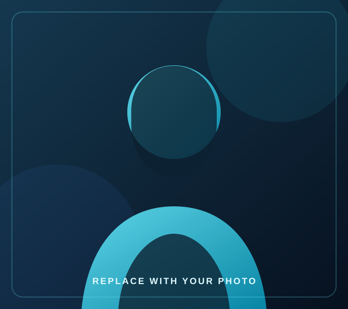

Backend
Application logic, routing, validation, authentication, and maintainable server-side features.
FULL STACK DEVELOPER
I build reliable web applications, practical admin systems, and integrations using Laravel, PHP, MySQL, and modern frontend technologies.

Full Stack Developer
01 / ABOUT
I'm a Full Stack Developer with professional experience building and improving web-based systems, and the founder of Bright Code.
I enjoy turning operational requirements into usable software: from backend logic and database workflows to responsive interfaces, reporting screens, and API integrations. My approach is practical: understand the need, define the scope, build carefully, and test before delivery.
What I value
Clear communication, maintainable code, useful features, and realistic delivery plans.
02 / TOOLKIT
A practical stack for business applications, backend workflows, and responsive user experiences.
Application logic, routing, validation, authentication, and maintainable server-side features.
Structured data, relationships, queries, migrations, and reliable data workflows.
Responsive interfaces with accessible controls and clear, consistent visual hierarchy.
Connecting applications to external services and keeping data moving between systems.
03 / SELECTED WORK
Representative project case studies. Replace demo descriptions and links with verified details for each project you are permitted to share.
A school operations platform concept covering common workflows such as student records, attendance, fee management, and reporting.
Problem: School teams need connected records and consistent day-to-day workflows.
Approach: Organize modules around user roles, validated data, and reportable records.
Verify before publishing: Add the exact modules you implemented, your contribution, and approved screenshots.
A dashboard pattern for presenting operational data, searchable records, status summaries, and report views in one interface.
Focus: Readable information hierarchy, filters, useful summaries, and responsive tables.
Add your evidence: Mention the real screens, logic, and performance work you personally delivered.
An integration-focused example showing how applications can exchange structured data with validation and error handling.
Focus: Request validation, authentication where needed, useful error responses, and logging.
Important: Never publish API keys, access tokens, private URLs, or client data.
These are presentation templates, not claims of verified client outcomes. Replace them with accurate project information before publishing.
04 / EXPERIENCE
Professional work and independent initiatives that shape how I approach software development.
Tec The Education Consultancy
Working on web application development and education-related systems. Add your verified responsibilities, key features, and outcomes here before publishing.
05 / CONTACT
Whether you need a Laravel feature, a business web application, or development support, send a short description and let's see if I can help.